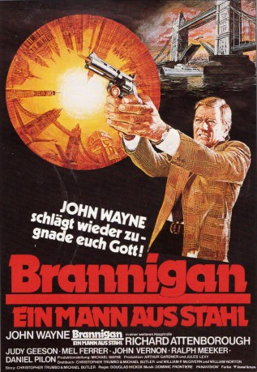
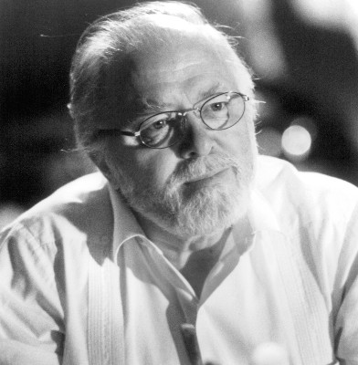
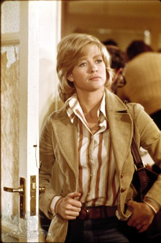
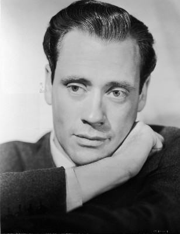
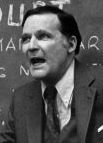
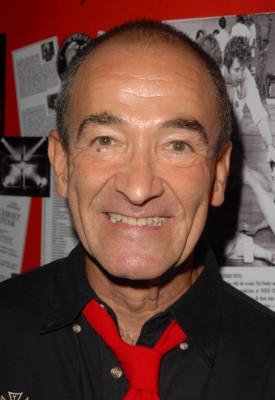
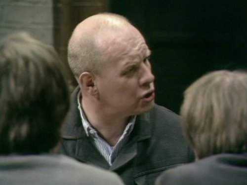
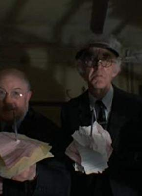
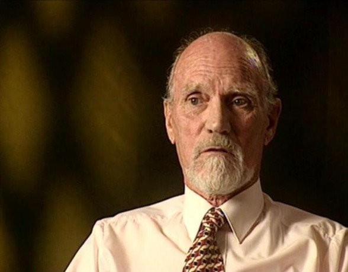
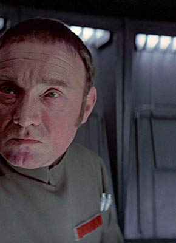

#9073 Brannigan - Ein Mann aus Stahl
Alternativ: Brannigan
 
 IMDB-Wertung: 6.1 / 10
IMDB-Wertung: 6.1 / 10  Metascore: 0
Metascore: 0 
Der raubeinige Chicagoer Cop Brannigan soll den Gangsterboss Larkin von London in die Staaten überführen. Als er aber in England eintrifft, ist Larkin verschwunden – und Scotland Yard tappt im Dunkeln. Brannigan nimmt die Jagd auf und gerät dabei selbst ins Fadenkreuz eines Killers.
Jahr: 1975
Dauer: 111 Minuten
FSK: 16
Land: England Studio: United Artists Pictures Inc.Tonspuren:
Untertitel:
Auflösung: 1080p (1920x824) Größe: 11059 MB
Genre: Action, Komödie, Krimi
Regisseur: Douglas Hickox
Drehbuch: Georg M. Oswald
Soundtrack: Dominic Frontiere
Darsteller:
 John Wayne als Lt. Brannigan
John Wayne als Lt. Brannigan-  Richard Attenborough als Cmdr. Swann
-  Judy Geeson als Jennifer
-  Mel Ferrer als Fields
-  John Vernon als Larkin
- Daniel Pilon als Gorman
- James Booth als Charlie-the-Handle
- Ralph Meeker als Capt. Moretti
-  Barry Dennen als Julian
- Lesley-Anne Down als Luana
- Pauline Delaney als Mrs Cooper
-  Brian Glover als Jimmy-the-Bet
- Anthony Booth als Freddy
- Tony Robinson als Motorcycle Courier
- Kathryn Leigh Scott als Miss Allen
 Harry Fielder als Passerby near Tower Bridge (uncredited)
Harry Fielder als Passerby near Tower Bridge (uncredited)- Alf Joint als Man in Bar (uncredited)
-  Juba Kennerley als Diner at Gentlemans Club (uncredited)
-  George Leech als Man in Bar (uncredited)
- Rick Lester als customer in Bar Fight (uncredited)
 Guy Standeven als Diner at La Terraza (uncredited)
Guy Standeven als Diner at La Terraza (uncredited)- John Stride als Insp. Traven
- Arthur Batanides als Angell
- Del Henney als Drexel
- Stewart Bevan als Alex
- Janette Legge als Miss Rooke
-  Don Henderson als Geef
- Enid Jaynes als
- David de Keyser als of Drexel and Jennifier's Boyfriend
- Lewis Alexander als Gentlemans Club Steward (uncredited)
- Del Baker als Man in Bar (uncredited)
- Tim Barlow als Customs Inspector (uncredited)
- Ernest Blyth als Gentlemans Club Member (uncredited)
- John Cannon als Policeman getting into car (uncredited)
- Alan Chuntz als Man in Bar (uncredited)
- Michael Crane als Boyle (uncredited)
- Hugh Elton als Wanted Man (uncredited)
- Steve Emerson als Man In Bar (uncredited)
 Victor Harrington als Diner at Gentlemans Club (uncredited)
Victor Harrington als Diner at Gentlemans Club (uncredited)- Steve Kelly als Gates (uncredited)
- Roy Lansford als Neighbour (uncredited)
- Raymond Mason als Club Clerk (uncredited)
- Declan Mulholland als Neighbour (uncredited)
- Michael Munn als (uncredited)
- Charles Pemberton als Arthur (uncredited)
- Peter Porteous als Masseur (uncredited)
- Nosher Powell als Man in Bar (uncredited)
- Joe Ritchie als Larkin's Club doorman (uncredited)
- Jeff Silk als Policeman (uncredited)
Datei: X:\1975\Brannigan - Ein Mann aus Stahl (1975, FSK16, 1920x824).mkv seit 19.07.2018
Festplatte: HD 1971-1979
 Es gibt insgesamt 27 Filme in der Gruppe '1975'
Es gibt insgesamt 27 Filme in der Gruppe '1975'